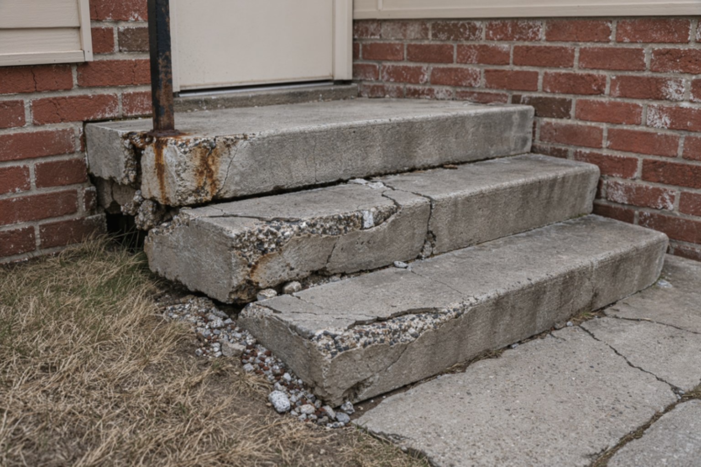
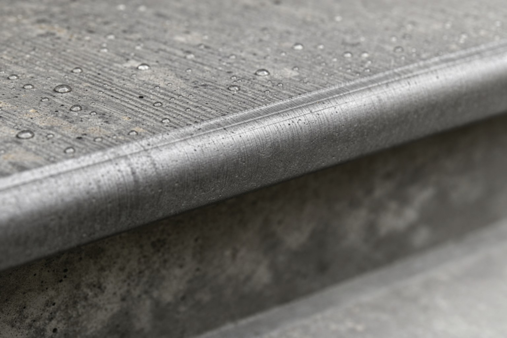
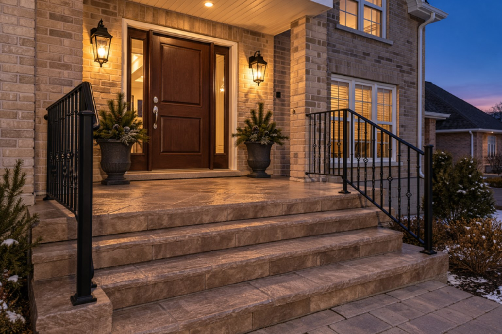

Front steps take more abuse than any other concrete on a GTA property: foot traffic all day, the first salt of January, and a small footprint that frost can grab and move. When a homeowner in Etobicoke or Markham sends us a photo of steps that have cracked, tilted or pulled away from the house, the first job is deciding which of two very different repairs they need. Most steps can be resurfaced for a fraction of replacement cost. Some cannot. This post is about the ones that cannot.
Replace or Resurface? How We Call It on Front Steps
The test is movement, not appearance. Chipped nosings, flaking treads, hairline cracks and old paint are surface problems, and a Jewelstone overlay fixes them in two to three days with no demolition. A step block that has moved is a structural problem, and nothing you put on top of it will hold.
- A gap between the steps and the house. Even a centimetre tells you the footing has settled or frost has pushed the block forward. The gap funnels water against the foundation and gets wider every winter.
- A landing that tilts. Set a level on it. A slope away from the door is drainage. A slope toward the door, or sideways, is settlement.
- Steps that rock. Hollow precast steps on a pad that has washed out move underfoot, and cannot be re-bedded reliably once the pad has failed.
- Concrete that crumbles through its depth. Decades of de-icing salt can rot old, non-air-entrained concrete from the inside. If a screwdriver sinks into a riser, there is nothing sound left for an overlay to bond to.
- Risers that were never to code. A 9-inch bottom step or a 4-inch top step is a trip hazard an overlay cannot correct. A re-pour can.
A front step that has pulled away from the house is not a cosmetic problem. The footing failed. No overlay fixes a footing, and we will not sell you one that pretends to.

What New Concrete Front Steps Cost in Toronto (2026)
New steps are priced per project, not per square foot, because the work is mostly labour: demolition, excavation for the footing, forming, reinforcing, the pour and the finish. The concrete itself is a small share of the bill. These are realistic 2026 ranges for Toronto and the surrounding region. Tight access, a tall landing or fill under the old steps push a quote toward the top of a bracket.
| Project | Installed (GTA, 2026) | Notes |
|---|---|---|
| New front steps + landing (3–5 risers) | $4,500 – $9,000 | Includes demolition of the old steps |
| Steps only, 2–3 risers, no landing | $2,800 – $5,000 | Side doors, garage entries, garden steps |
| Stamped or integrally coloured finish | + $900 – $2,000 | Slate, flagstone or ashlar texture, sealed |
| Aluminum or steel railing | $600 – $1,800 per side | Required past three risers; see code notes below |
| Matching broom-finish walkway, approx. 80 sq ft | $1,000 – $1,600 | $12–$20/sq ft, plus removal of the old path |
| Resurfacing existing sound steps (Jewelstone) | $1,800 – $3,500 | No demolition, 2–3 days, when the block has not moved |
| Porch resurfacing to match new steps | $2,500 – $6,000 | Common pairing when the porch slab is sound |
Resurfacing a sound set of steps costs 40–60% less than tearing it out. The new pour only wins when the old block has failed, and then it wins decisively, because resurfacing money spent on moving steps cracks along the same gap by spring. Our poured concrete guide covers the same decision for walkways and driveways, and the 2026 resurfacing cost guide has the full overlay numbers.
When you compare quotes, ask two questions: how deep does the footing go, and what mix is being ordered. If the answer to the first is “we pour on a gravel pad” and the answer to the second is a blank look, that is the $3,000 set of steps that leans by its third winter. A proper footing below frost and a 32 MPa air-entrained mix are most of the price difference, and all of the difference in how long the steps last.
Building Code Basics for Concrete Steps in Ontario
Front steps on a house fall under Part 9 of the Ontario Building Code, and the numbers are not optional because the steps are outside. The ones that matter most:
- Rise: no more than 200 mm (7⅝") and no less than 125 mm (5") per step, with every riser in the flight the same height. Uneven risers are the most common cause of falls on exterior steps.
- Run: at least 255 mm (10") from nosing to nosing. Deeper treads, 280–300 mm, feel better outdoors and give a shovel room to work.
- Landing: the top landing should be at least as deep as the door is wide, and sit a little below the threshold so meltwater cannot run inside.
- Handrail: required once an exterior flight has more than three risers, and a sensible addition on any step a parent or grandparent uses in February.
- Guard: required where the landing or a step is more than 600 mm (24") above the ground beside it.
On permits: replacing steps like-for-like usually does not need a building permit in Toronto or most GTA municipalities, but a landing higher than 600 mm, a new porch roof, or a layout that pushes closer to the front lot line can. Rules vary between the City of Toronto, Mississauga, Vaughan and the rest of the region, so we confirm with the municipality before anything is dug and build to code dimensions either way.
How Front Steps Are Built to Survive a GTA Winter
Steps fail for the same reason walkways and driveways fail: what was skipped underneath them and inside them. A set that still sits tight against the house in 2046 is built in this order.
- Remove everything, including the old pad. Precast steps usually sit on a few inches of gravel over topsoil. That is why they moved. The old block, the pad and the soft soil come out.
- Footings below frost. In the GTA that means roughly 1.2 m (4 ft) down, or a properly compacted granular base where the steps are designed to float independent of the house. Which approach fits depends on the height of the steps and what is already under the porch.
- Tie in or isolate, on purpose. Steps are either doweled to the foundation with epoxy-set rebar so they move with the house, or isolated from it with a joint and a flexible sealant so they can move without tearing anything. Steps that are neither tied nor isolated are the ones that end up with the gap.
- Reinforce the block. A rebar grid through the treads and risers on chairs, not resting on the ground. Reinforcement does not stop a crack from starting; it stops it from opening and stepping.
- Order the right concrete. Exterior steps in Ontario should be a 32 MPa, air-entrained mix with a low water-to-cement ratio. Air entrainment gives freezing water room to expand inside the concrete instead of popping the surface off. It is the line item cheap pours quietly drop.
- Slope every tread. About 2% (a quarter inch per foot) toward the front edge, so water leaves instead of freezing into a sheet.
- Cure it, then seal it at 28 days. Covered and kept damp for the first week, foot traffic after two to three days, and a penetrating sealer only once the concrete has reached full strength. No de-icing salt for the first winter; sand for traction instead.

Design Options for Poured Concrete Steps
A new pour is also a chance to get the look right, and the finish is formed into the concrete rather than added later, so it costs less than most people expect.
- Broom finish with troweled borders. The classic Toronto step: a fine broom texture across the tread for traction, framed by a smooth 2-inch border. Clean, slip-resistant, easy to shovel.
- Bullnose or square nosings. A rounded bullnose resists chipping and reads softer against brick; a crisp square edge suits a modern stucco or dark-sided house. Either is formed in the pour at no extra cost.
- Stamped treads and risers. Slate, flagstone or ashlar texture with integral colour and a darker release, sealed matte. It pairs well with a stamped overlay on the existing porch or walkway so the whole entry matches.
- A wider landing. Extending the top landing by even 300 mm makes room for two people and a storm door that swings out. It is the most-requested change on a re-pour and the cheapest moment to make it.
- Integral colour, or an overlay later. Warm grey, sandstone or charcoal through the full depth of the pour, or a plain broom finish that takes a Jewelstone overlay after a season, which is how we match new steps to a resurfaced porch exactly.

Timing: When to Pour New Steps in Toronto
Concrete needs to be placed and cured above about 5°C, so the residential pouring season in the GTA runs from April to mid-or-late November depending on the forecast. Late November is usually where it closes. That makes this month the time to get failed steps assessed and a spring date locked in, not the time to rush a pour into a cold snap. Our guide to cold-weather concrete pouring explains what is and is not possible once temperatures drop.
If the steps are unsafe right now, a winter fix does not have to be permanent: a heaved block can be shimmed and a slick landing treated for traction so nobody falls in January. The real work happens when the ground thaws, with a footing deep enough that you never have this conversation again.
Where We Work
Artisan Coat pours new concrete front steps, landings and walkways, and resurfaces porches and steps, across Toronto, Mississauga, Brampton, Vaughan, Oakville, Etobicoke, North York, Scarborough, Richmond Hill, Markham, Burlington, Milton, Caledon, Hamilton and the wider GTA. Assessment, demolition, footing, pour, finish and sealer are handled by one crew with 20+ years of concrete work behind it, backed by a written warranty. See all of our concrete services.
The Short Version
If your front steps are ugly but have not moved, resurface them for $1,800–$3,500 and keep the structure. If they have pulled away from the house, tilted, rock underfoot or crumble through their depth, they need a new pour: $4,500–$9,000 for steps and a landing in the GTA in 2026 including demolition, more for stamping or railings. Build them with a footing below frost, a tie-in or isolation joint that is chosen on purpose, rebar on chairs, a 32 MPa air-entrained mix, risers of 125–200 mm and runs of at least 255 mm, and seal them at 28 days. Done that way, the steps outlast the front door.